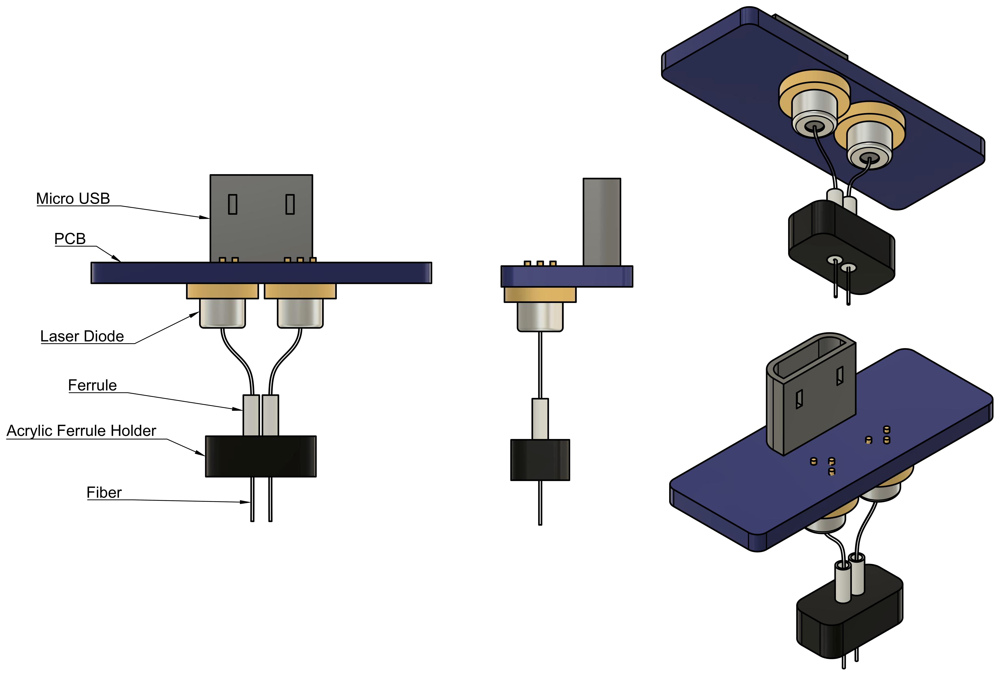

Cerebro Wireless Optogenetics System v2¶
Warning
This documentation is a work in progress. Please understand that there will porbably be typos and missing
Note
You are currently viewing documentation for the radio controlled Version 2 system. Documentation for the infrared controlled Version 1 system can be found here.
Welcome! This is the hardware and software documentation of a system used for wireless optogenetic stimulation. As an open-source project, this documentation is intended to provide exhaustive resources and detailed instructions to enable anyone to study, replicate, share, improve and contribute back to the Cerebro Wireless Optogenetics System.
This project was developed by Andy Lustig in the Karpova Lab at Janelia Research Campus. If you have any questions you may contact him at lustiga@janelia.hhmi.org
Features¶
- Open Source
- Flexible - All code and CAD is available so you can make changes and improvements to anything you want!
- Low Cost - Hardware BOMs are provided, with a total estimated material cost of ~$200 (~$40 per Cerebro, ~$120 per bilateral head implant, ~$40 per Base Station). The software is free.
- Wireless Radio
- Low Latency - Less than 1.5 ms latency between a trigger command being sent and the laser diodes being powered on.
- 2-Way Communication - Base Station can send messages to start, extend, or interrupt light stimulation on Cerebro. Cerebro can send acknowledgment messages that commands are received, as well as battery status updates.
- Good Signal Range - At least 20m, doesn’t need line of sight. (The radio module that Cerebro uses has been shown to have ranges greater than 500m with the right antennas https://lowpowerlab.com/forum/rf-range-antennas-rfm69-library/rfm69hw-range-test!/)
- Wirelessly Adjustable Waveforms - Cerebro can produce customizable waveforms with 1ms resolution. The waveform parameters can be adjusted wirelessly, even while the animal is behaving.
- Laser Diodes
- High Power - Laser diodes are more powerful than LEDs. Instead of using an LED coupled to a large fiber, you can use a laser diode coupled to smaller fiber and get equivalent light power output but with reduced brain tissue damage.
- Independent Bilateral Control of Intensity - Each laser diode has its own control circuitry, enabling you to turn on either diode at different times and/or different intensities. Intensity ramp-downs can be used to prevent post illumination rebounds in neural activity (https://www.cell.com/neuron/pdf/S0896-6273(17)30602-5.pdf).
Block Diagram¶

System Components¶
Cerebro¶

Cerebro is a rechargable battery powered wireless receiver that connects to a head implant assembly. Cerebro receives commands from a Base Station and delivers power to the laser diodes on the head implant, resulting in light being emitted through the optical fibers into the brain. The intensity and waveform of the emitted light can be adjusted wirelessly during an experiment (Edit Waveform Parameters).
Head Implant¶
{kind=link}
The head implant assembly consists of two laser diodes coupled to optical fibers. Both laser diodes are accompanied by a phototranistor that is used as feedback to maintain a constant light output. The laser diodes can be independently controlled and can output arbitrary waveforms with millisecond resolution.
Base Station¶

The Base Station is responsible for communicating wirelessly with Cerebro via radio. It is connected by USB to a Windows computer, where commands can be sent and events can be logged using serial communication with Xavier. Base Station can also be controlled directly by TTL signals going into its RJ45 connector. A high TTL signal on pin3 of the RJ45 causes a trigger command to be sent, and a high TTL signal on pin2 causes a stop command to be sent.
Charging Dock¶

The Charging Dock has the same battery connectors as Cerebro and can charge up to 6 Cerebro lipo batteries at once.
Xavier Software¶

Xavier is a GUI for sending and logging Base Station commands. Xavier provides an easy interface for sending parameter changes and can also be used as a debugging tool.
Alternative Commerical Systems¶
Here are some commercial products that also provide wireless optogenetics:
Documentation Outline¶
Licenses¶
The MIT License (MIT)
Copyright (c) 2015-2019 Andy Lustig
Permission is hereby granted, free of charge, to any person obtaining a copy of this software and associated documentation files (the “Software”), to deal in the Software without restriction, including without limitation the rights to use, copy, modify, merge, publish, distribute, sublicense, and/or sell copies of the Software, and to permit persons to whom the Software is furnished to do so, subject to the following conditions:
The above copyright notice and this permission notice shall be included in all copies or substantial portions of the Software.
THE SOFTWARE IS PROVIDED “AS IS”, WITHOUT WARRANTY OF ANY KIND, EXPRESS OR IMPLIED, INCLUDING BUT NOT LIMITED TO THE WARRANTIES OF MERCHANTABILITY, FITNESS FOR A PARTICULAR PURPOSE AND NONINFRINGEMENT. IN NO EVENT SHALL THE AUTHORS OR COPYRIGHT HOLDERS BE LIABLE FOR ANY CLAIM, DAMAGES OR OTHER LIABILITY, WHETHER IN AN ACTION OF CONTRACT, TORT OR OTHERWISE, ARISING FROM, OUT OF OR IN CONNECTION WITH THE SOFTWARE OR THE USE OR OTHER DEALINGS IN THE SOFTWARE.

Cerebro Wireless Optogenetics System by Andy Lustig is licensed under a Creative Commons Attribution-ShareAlike 4.0 International License